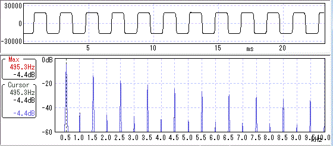

歪みと波形・倍音その3（真空管他）
2014年08月01日 カテゴリー：歪みと波形・倍音
久方ぶりに波形・倍音を調べました。
歪みと波形・倍音 記事一覧
【Fender Champ Amp AA764改】
（ローゲイン）
偶数次倍音が多く出てきています。
（ハイゲイン）
やはり奇数次倍音より偶数次倍音が多いです。波形は今までにない変な形ですね。
【Tube Drive 200V】
（ローゲイン）
Champと同様偶数次倍音が多く出てきています。
（ハイゲイン）
波形はChampと違いますが、奇数次倍音より偶数次倍音が多いです。
【BOSS BD-2 Blues Driver】
波形に丸みがあります。回路図からするとJFETとダイオード（対称）両方の歪みがありそうです。意外と偶数次倍音も出てきています。
【PINK LLAMA】

真四角な波形です。LEDクリッピングに似ています。偶数次倍音は少なく、真空管に近いとは言えなさそうです。
・総評（のようなもの）
一般的に真空管の歪みというのは偶数次倍音が多いと言われています。今回調べてみて、偶数次倍音が奇数次倍音より多いというのがポイントかもしれないとわかりました。ただそれを真空管以外で再現するのはなかなか難しいようです。ネットで検索しても調べている人が少ないです。今後いろいろ試していきたいと思います。